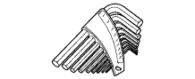

REAR CRANKSHAFT OIL SEAL > COMPONENTS > Preparation

| Caliper gauge | - |
| Compressed air | - |
| Cylinder gauge | - |
| Dial indicator | - |
| Engine sling device | - |
| Feeler gauge | - |
| Gasket scraper | - |
| Hammer | - |
| Heater | - |
| Magnetic finger | - |
| Micrometer | - |
| Piston ring compressor | - |
| Piston ring expander | - |
| Plastic-faced hammer | - |
| Precision straightedge | - |
| Ridge reamer | - |
| Rod aligner | - |
| Spring tester | - |
| Steel square | - |
| Spring scale | - |
| Torque wrench | - |
| Valve guide bushing brush | - |
| Vernier caliper | - |
| Wire brush | - |
| Wooden block | - |
| 6 mm sharp reamer | - |
| 8 mm x 1.25 pitch tap | - |
| 40° Cutter | - |
| 45° Carbide cutter | - |
| 90° Cutter | - |
| 130° Cutter | - |
| Service Bolt 6 mm x 1.0 pitch with a length of 16 mm or more | - |
| Service Bolt 8 mm x 1.25 pitch with a length of 15 mm or more | - |
| Service Bolt 14 mm x 1.5 pitch with a length of 70 mm or more | - |
 | 09010-3C100 | Set, Hexagon Wrench | - |
 | (09013-6C100) | Socket Hexagon 5mm | - |
 | (09013-6C110) | Socket Hexagon 6mm | - |
| (09013-6C130) | Socket Hexagon 10mm | - |
 | 09010-3C120 | Set, "TORX" Socket Wrench | - |
 | (09013-1C120) | "TORX" Socket Wrench T-type T30 | - |
| 09011-2C560 | Socket Wrench 26mm/12p | - | |
| 09013-1C510 | "TORX" Socket Wrench E-type E6 | - | |
| 09013-1C520 | "TORX" Socket Wrench E-type E7 | - | |
| 09013-1C530 | "TORX" Socket Wrench E-type E8 | - | |
 | 09013-6C510 | Long Socket Hexagon 6mm | - |
 | 09013-7C120 | Straight Hexagon 14mm | - |
 | 09013-7C400 | Wrench Set | - |
 | 09091-1C100 | Oil Pan Seal Cutter | - |
| 09216-00021 | Belt Tension Gauge | - |
| Toyota Genuine Adhesive 1344, Three Bond 1344 or equivalent | - |
| Toyota Genuine Seal Packing Black, Three Bond 1207B or equivalent | - |
| Toyota Genuine Adhesive 1324, Three Bond 1324 or equivalent | - |